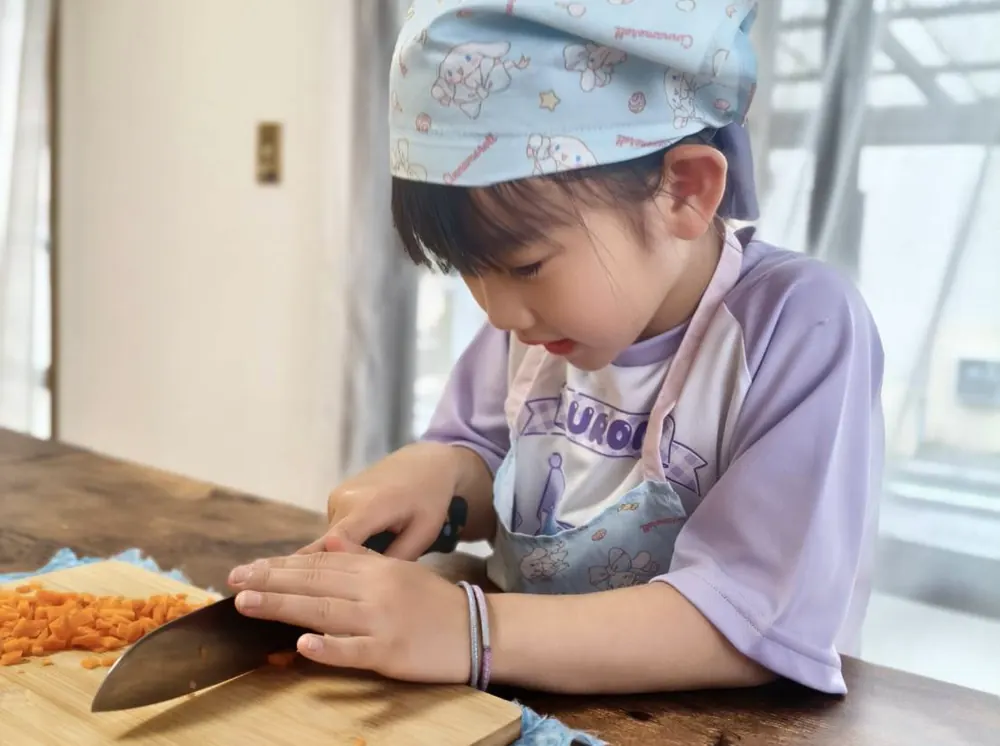
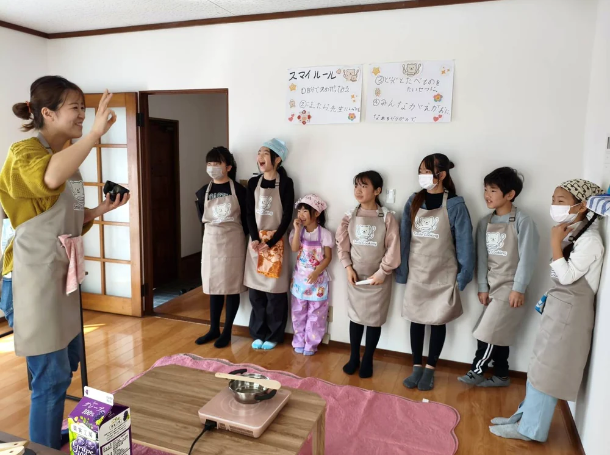
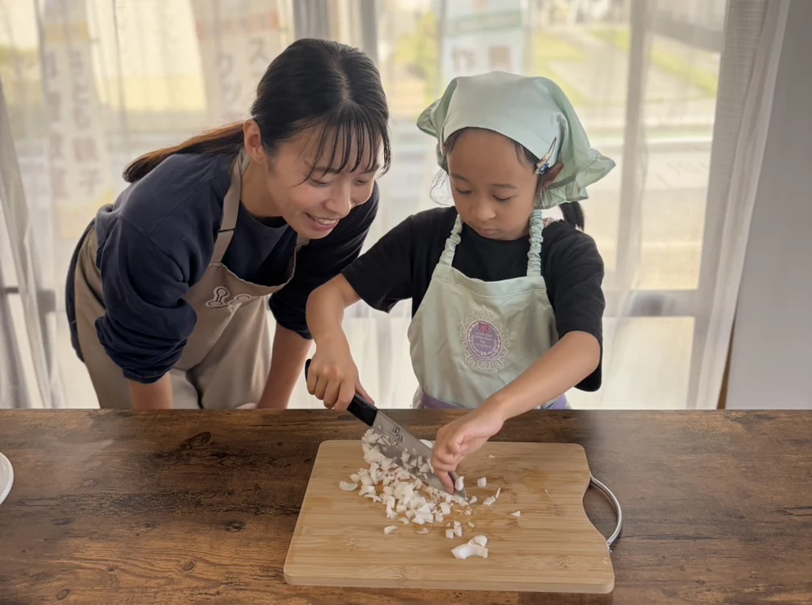
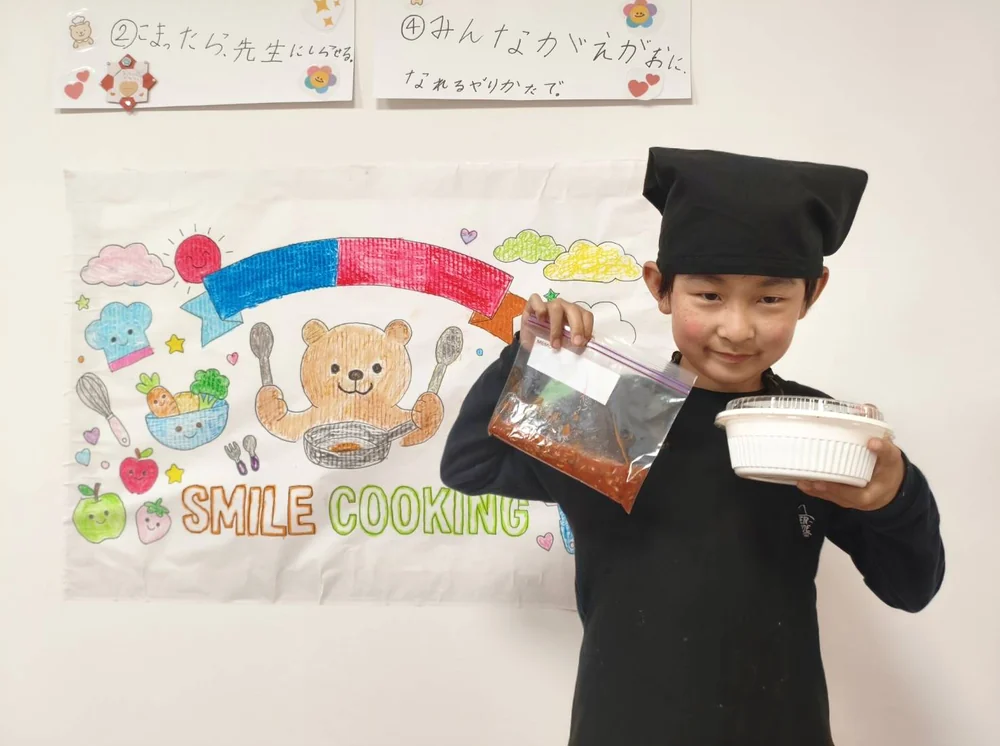

01
今日のルールと流れを確認する
はじめてでも安心して参加できるように、その日の流れやお約束をみんなで確認します。安心して挑戦できる場づくりから始めます。

先生がそばで見守りながら、子どもが自分の手で料理を作る小学生レッスン。作った料理は持ち帰り、今夜の夕ごはんとして家族の食卓に並びます。
📍 場所の詳細は公式LINEリッチメニューにてご案内しています
料理に興味を持ってくれるのはうれしい。でも、平日の夕方は宿題、明日の準備、家のこと。ゆっくり付き合いたくても、なかなか余裕がない。
見る・遊ぶだけでなく、自分の手を動かして何かを作る時間を増やしてあげたい。
包丁や火に興味はあるけれど、家だと忙しさもあって「また今度ね」になりやすい。
上手にできることより、「自分でやってみたい」と思える経験を増やしてあげたい。
「料理、手伝いたい！」
その気持ちはうれしい。でも、宿題、明日の準備、家のこと…
受け取る余裕が、今日もなかった。
その「やりたい」を、
ここなら安心して任せられる。
計量も、切ることも、火を使う工程も。年齢や経験に合わせて安全を確認しながら、先生がそばで見守ります。作ったものは持ち帰って、今夜の夕ごはんになります。
料理はその小さな練習です。ここで大切にしているのは「上手に作れる子」ではなく、「自分で考えて、最後までやってみる子」を育てること。
レッスンは、子どもが自分で考えて動ける時間を大切にしながら、安全面と食の学びをそばで支えます。
“楽しかった”を“家でもできる”へ。工程の理解、挑戦、振り返りまでが、しっかり一本でつながる設計です。



はじめてでも安心して参加できるように、その日の流れやお約束をみんなで確認します。安心して挑戦できる場づくりから始めます。
今日使う食材や料理のポイントを、楽しくわかりやすく紹介します。ただ作るだけでなく、食への興味も育てていきます。
一人ひとりのペースに合わせて、自分で考えながら進めていきます。うまくいかない場面も、講師と一緒に立て直しながら、「自分でできた」に変えていきます。
やってみる → できる → もう一回やりたい。その流れが生まれます。頑張ったこと、工夫したことを振り返り、自分の中に残していきます。できた経験を言葉にすることで、自信はもっと強くなります。
作った料理は持ち帰り。家族の食卓に、自分が作った一品が並びます。“習いごと”が、その日の暮らしにちゃんとつながります。
季節や日程によって内容は変わります。レッスンの流れは同じでも、料理やミッション例が変わることで、新しい挑戦が生まれます。
こんなにしっかり向き合って見てくれるとは思わず、安心して任せられます。
小学2年生 保護者の方
帰ってから「買い物行きたい！自分で作りたい」と言われました。こんなに積極的になるとは思っていなくて。
小学3年生 保護者の方
「ずっとこんなことをしたんだよ！」と嬉しそうに説明してくれて、美味しく食べました！
小学1年生 保護者の方
🎯 各回ミッションが違うので、何度参加しても新しい目的があります。
もちろん大丈夫です。食材にふれるところから始め、その子の年齢や経験に合わせて進めます。
大丈夫です。少人数制で、一人ひとりの様子を見ながら進めます。包丁や火を使う工程も、年齢や経験に合わせて安全を確認しながらサポートします。
はい。太田市近郊からのご参加も可能です。場所の詳細は公式LINEでご案内していますので、通いやすさが気になる場合もお気軽にご相談ください。
キャンセルは前々日まで無料、前日は50%、当日は100%のキャンセル料を頂戴します。
振替は、1か月以内の空席がある日程へ1回まで無料で承ります。振替先は同額以下のレッスンに限ります。
無断キャンセルは振替対象外です。振替をご希望の場合は、公式LINEよりご連絡ください。体調不良などの場合も、まずはお気軽にご相談ください。
事前にLINEでご相談ください。できる範囲で個別にご案内いたします。
群馬県太田市で開催している、小学生向けの少人数料理レッスンです。
日程・空き状況・料金は予約ページから。場所の詳細やご質問はLINEからお気軽にどうぞ。
※ご予約はLINEまたは予約サイトから承っています